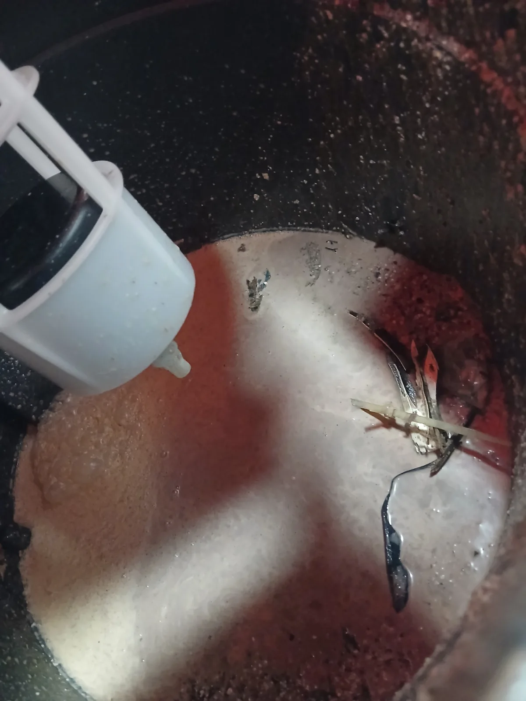

단원구 고잔동 싱크대막힘, 현장 도착 후 진단
싱크대 물이 제대로 내려가지 않는다는 요청을 접수한 뒤 장비를 준비해 안산시 단원구 고잔동 현장으로 신속하게 이동했습니다. 숙련 기술자가 싱크대배관 상태를 점검한 결과, 단순한 기름때 막힘과는 달리 물을 흡수해 불어난 쌀과 여러 종류의 잡곡이 배관 내부를 가득 막고 있었습니다. 곡물류는 물을 만나면 부피가 커지고 서로 달라붙기 때문에 배관 깊숙이 들어가면 일반적인 관통 작업만으로는 깨끗하게 처리하기 어렵습니다. 이에 초입부는 강한 흡입력을 이용한 석션 작업을 진행하고, 깊은 구간은 샤프트 작업을 병행하기로 했습니다.
1단계: 증상 확인과 필요한 장비 작업
먼저 싱크대배관에 석션기를 연결해 내부에 정체된 오수와 불어난 곡물류를 집중적으로 흡입했습니다. 작업을 진행하자 숭늉처럼 걸쭉해진 물과 함께 흰쌀, 흑미를 비롯한 잡곡이 계속 빨려 나왔습니다. 한두 숟가락 정도가 아니라 별도의 용기에 담아야 할 만큼 많은 양이 배출됐으며, 석션 작업을 반복해 배관 초입부와 흡입 가능한 구간의 곡물 덩어리를 최대한 제거했습니다.

2단계: 원인 구간 처리와 정상 작동 확인
석션으로 대량의 쌀과 잡곡을 제거했지만 이미 배관 깊숙한 곳으로 이동한 곡물 찌꺼기까지 흡입하기에는 한계가 있었습니다. 남은 이물질이 다시 불어나 싱크대막힘을 일으키지 않도록 플렉스 샤프트를 배관 내부에 투입했습니다. 회전하는 샤프트로 배관 벽면과 깊은 구간에 뭉쳐 있던 곡물류를 잘게 분쇄하고, 입상관 방향까지 충분히 밀어 보내는 배관스케일링 작업을 진행했습니다. 석션과 샤프트를 현장 상태에 맞춰 복합 운용해 배관 내부의 막힌 구간을 끝까지 정리했습니다.

작업 결과와 재발 방지 안내
석션으로 꺼낸 불어난 쌀과 잡곡류를 확인한 뒤 샤프트 작업으로 깊은 구간까지 정리하고, 마지막으로 싱크대 물을 충분히 흘려보내 정상적으로 배수되는지 확인했습니다. 쌀이나 잡곡은 크기가 작아 배수구로 쉽게 흘러갈 것처럼 보이지만 배관 내부에서 물을 흡수하면 부피가 커지고 기름때와 결합해 단단한 막힘을 만들 수 있습니다. 남은 밥이나 불린 곡물은 배수구에 버리지 말고 음식물로 분리해야 재발을 예방할 수 있습니다. 신라건축설비는 안산시 단원구를 비롯한 경기 전역과 서울 전 지역에 신속하게 출동하며, 싱크대막힘·변기막힘·하수구막힘을 전문적으로 해결합니다. 석션과 샤프트 배관스케일링부터 고압세척, 배관 내시경검사, 공용배관 및 대형 배관공사까지 현장 상황에 맞춰 자체 대응합니다.
최종 조치: 싱크대배관 초입부와 접근 가능한 구간의 불어난 쌀·잡곡류를 석션으로 대량 제거한 뒤, 깊숙한 배관에 남은 곡물과 침전물은 샤프트 배관스케일링으로 분쇄해 입상관 방향으로 이송하고 정상적인 배수 흐름을 확보했습니다.
현장 방문 전 확인하는 비용과 작업 범위
신라건축설비는 현장 증상과 배관 구조를 확인한 뒤 필요한 작업과 예상 비용을 안내합니다. 단순 관통으로 해결되는지, 배관내시경·석션·고압세척 또는 추가 장비가 필요한지는 현장 상태에 따라 달라집니다. 출장비와 야간 작업비, 추가 장비 비용이 발생할 수 있는 경우 작업 전에 먼저 설명하고 동의를 받은 범위에서 진행합니다.
업체를 선택할 때 확인할 사항
무조건적인 ‘0원’ 표현보다 실제 작업 범위, 추가 비용 조건, 사용 장비와 사후 대응 기준을 확인하는 것이 중요합니다. 해결되지 않았을 때의 비용 기준과 작업 후 동일 증상 발생 시 점검 범위를 사전에 문의해두면 불필요한 분쟁을 줄일 수 있습니다.
단원구 싱크대막힘 자주 묻는 질문
싱크대 물이 천천히 내려가면 바로 점검해야 하나요?
싱크대 물이 원활하게 빠지지 않고 배수 속도가 점점 느려졌으며, 물을 사용하면 싱크대배관 내부에서 막힘과 역류 증상이 나타나는 상태였습니다.처럼 증상이 나타나더라도 원인은 현장마다 다를 수 있습니다. 장비와 배관 구조를 확인한 뒤 필요한 작업 범위를 안내합니다.
작업 전 비용을 알 수 있나요?
작업 전 증상과 현장 여건을 확인해 예상 범위와 비용을 먼저 안내합니다. 변기 탈거, 장비 추가 투입 또는 공용배관 작업이 필요한 경우 고객 동의 없이 임의로 진행하지 않습니다.
약품으로 해결되지 않으면 어떻게 하나요?
완료 후 정상 작동을 함께 확인하고 작업 범위에 따른 사후 안내를 드립니다. 동일 증상이 반복되면 현장 기록을 기준으로 원인을 다시 점검합니다.
싱크대막힘 서울·경기 출동지역
신라건축설비는 단원구 고잔동 현장을 포함해 서울 25개 구와 경기도 31개 시·군의 배관 문제를 상담합니다. 현장 거리와 기사 배정 상황에 따라 출동 가능 여부를 먼저 안내드립니다.
서울 전 지역
강남구 · 강동구 · 강북구 · 강서구 · 관악구 · 광진구 · 구로구 · 금천구 · 노원구 · 도봉구 · 동대문구 · 동작구 · 마포구 · 서대문구 · 서초구 · 성동구 · 성북구 · 송파구 · 양천구 · 영등포구 · 용산구 · 은평구 · 종로구 · 중구 · 중랑구
경기도 주요 출동지역
수원시 · 용인시 · 고양시 · 화성시 · 성남시 · 부천시 · 남양주시 · 안산시 · 평택시 · 안양시 · 시흥시 · 파주시 · 김포시 · 의정부시 · 광주시 · 하남시 · 광명시 · 군포시 · 양주시 · 오산시 · 이천시 · 안성시 · 구리시 · 의왕시 · 포천시 · 양평군 · 여주시 · 동두천시 · 과천시 · 가평군 · 연천군